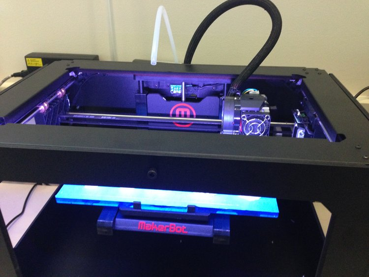
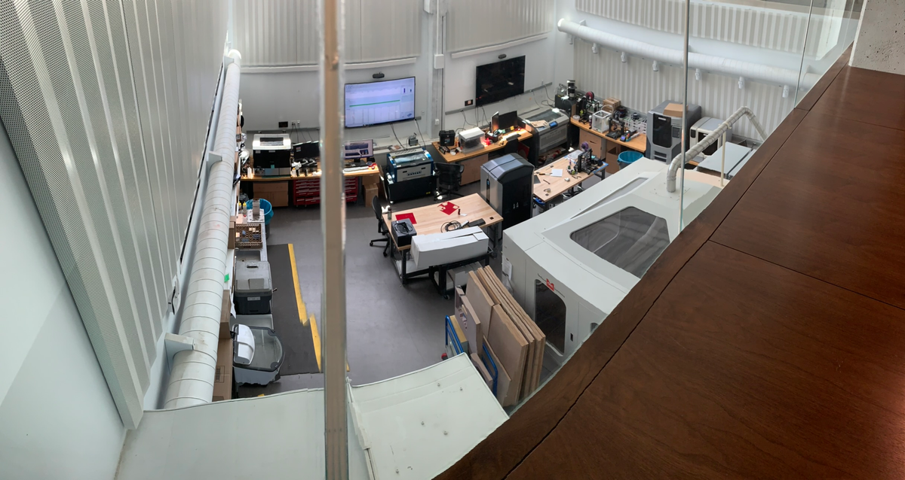

Founding of the Rapid Prototyping Lab (inspired by fab lab)
Teammates:
Georgia Crowther, Paul Chang, Oliver Kliewe
Professor:
Robert Shepherd
Summary
Co-founded the RPL at Cornell for the engineering community to have a resource that would support engineering class projects, project teams, and personal ideation. A friend and I got together, worked with Dr. Robert Shepherd and Matt Ulinski to source 3D printers and a laser etcher. We moved them all to one location and started printing. It started out small with project teams coming to us for help, but as we increased resources, the user-base increased exponentially. We put together a team of students that supported the lab, made a scheduler to coordinate jobs, and ensured all machines were running constantly and without downtime. That last bit was the crucial benefit as previously the 3D printers being used were down half the time due to user error or bugs with the system. The RPL still exists today in its new home in the recently renovated Upson Hall (Mechanical and Aerospace Engineering Hall) where it occupies two stories and has expanded greatly.
During my tenure at the lab, from founding through the first year of operation, we went through significant revisions, but we had 2 Up! Plus 2’s [FFF], 2 CubeX Duos [FFF], a Stratasys Dimension [FDM], 2 Makerbot Replicators [FDM], an Objet 30 [polyjet], and an Epilog 50 Watt laser cutter. The room was renovated to be more suited to the needs of the printers based on our input, alleviating thermal and chemical concerns. During this time I worked extensively with the student population to advise and guide the design of their prototypes. I grew a lot in this lab and gained a deep appreciation for solid modeling and intelligent rapid prototyping.
Photos
 Fig. 1: One of the few photos I have from the original lab. The lab itself was only about 200sq. ft. and was hidden away in a dark corner of the engineering campus.
 Fig. 2: The RPL today, 2019, the lab has come a long way since we first got it off the ground
Videos
UP printers going full steam after days of debug